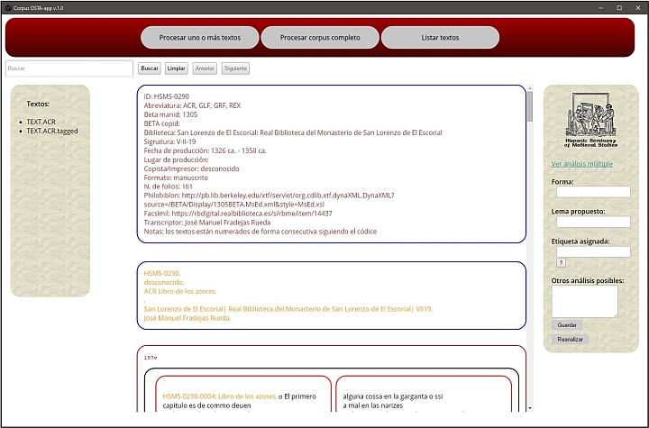
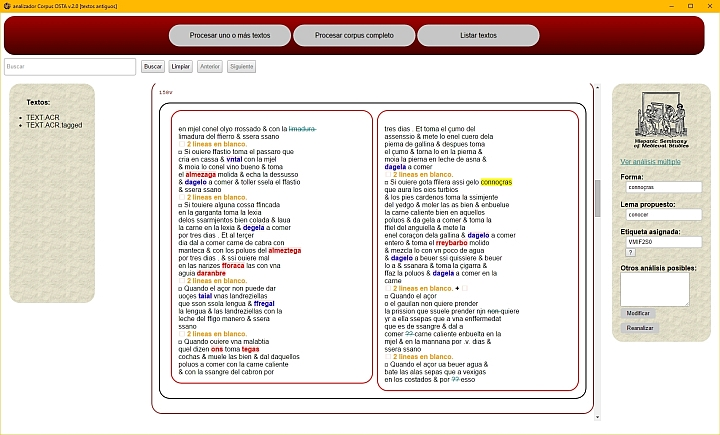
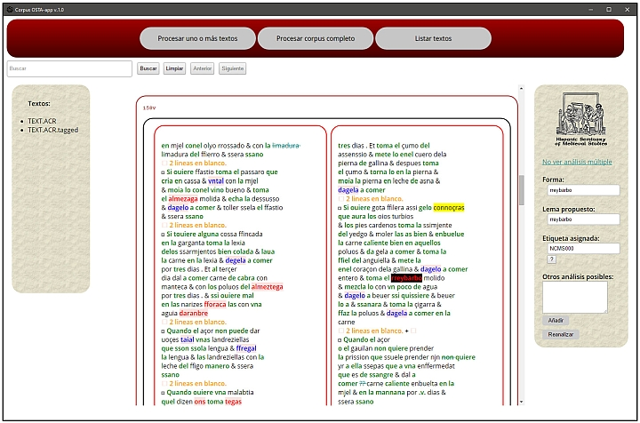
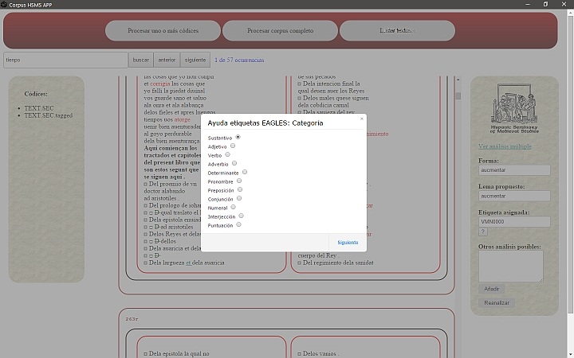

La última funcionalidad del Analizador Corpus OSTA es la edición del diccionario de formas utilizado por el lematizador. Para ello es necesario procesar una transcripción haciendo clic en procesar uno o más textos, o seleccionar una transcripción ya procesada haciendo clic en listar textos en la barra de selección de procesos y luego seleccionando en la barra de textos el fichero TEXT.SIGLA.tagged correspondiente.

Tras la cabecera aparece el texto, manteniendo la disposición en página (foliación, encabezamiento, columnas de texto, signaturas y reclamos). Al hacer clic en cualquier palabra aparecen en el analizador los diferentes componentes del análisis.


Para editar el diccionario es necesario seguir los siguientes pasos:
? que muestra una ventana de ayuda para el etiquetado donde se seleccionan todos los elementos necesarios para definir la etiqueta. Para que la etiqueta aparezca en la caja de Etiqueta asignada basta con hacer clic en finalizar.
Haciendo clic en Reanalizar se vuelve a procesar la transcripción con el nuevo diccionario. Las entradas que antes aparecían en rojo, aparecen ahora en negro.
El diccionario que FreeLing utiliza para el procesado de los textos, hsms.src, es un fichero en formato UTF-8 localizado en la carpeta C:\HSMS-tools\analizador\hsms-es\.
Las entradas simples ocupan una única línea con la forma seguida por el lema y la etiqueta morfológica: forma lema PoS
contygo contigo PP2CSO00
guirlanda guirnalda NCFS000
reuuscassen rebuscar VMSI3P0
thiriaca triaca NCFS000
Las entradas correspondientes a formas homógrafas contienen más de un lema y etiqueta morfológica: forma lema1 PoS1 lema2 PoS2
casa casa NCFS000 casar VMIP3S0 casar VMM02S0
esto estar VAIP1S0 este PD0NS000
furto hurtar VMIP1S0 hurtar VMIS3S0 hurto NCMS000
manleuase manlevar VMSI1S0 manlevar VMSI3S0
vinno venir VMIS3S0 vino NCMS000
Las entradas correspondientes a formas aglutinadas, cuyos componentes son analizados individualmente, tienen un formato similar: forma forma1+forma2 PoS1+PoS2, donde forma1, forma2 son las formas (no los lemas) de las palabras aglutinadas. Por ejemplo:
acoraçon a+coraçon SP+NC
Esta línea expresa que siempre que se encuentra la forma acoraçon, esta es reemplazada por sus componentes: a y coraçon, asignándose a cada uno de ellos la etiqueta, PoS1 y PoS2 definida en su entrada correspondiente.
a a NCFS000 a SPS00 haber VAIP3S0 haber VMIP3S0
coraçon corazón NCMS000
De este modo, a será analizado como SP y coraçon como NCMS000.
Un número reducido de entradas de formas aglutinadas tienen la siguiente estructura: forma forma1+forma2 PoS1+PoS2/PoS2.
avna a+una SP+PI/DI
poral pora+el SP+DA/PP
En estos casos la barra / separa dos posibles análisis, que FreeLing determina utilizando el módulo de probabilidades.
Cuando se edita el diccionario con el Analizador Corpus OSTA las nuevas entradas aparecen al final del fichero hsms.src entre las etiquetas <Entries> </Entries> . Estas nuevas entradas también aparecen en el fichero additions-hsms.src, en la carpeta C:\HSMS-tools\analizador\hsms-es\.
A continuación, se ofrece una serie de ejemplos para mostrar el proceso de edición/modificación de las entradas del diccionario. La columna de la izquierda corresponde a las diferentes cajas de texto del analizador y la de la derecha al texto que se introduce en cada una de ellas.
Son aquellas que contienen un lema y un único análisis morfológico.
| Forma: | prophanados |
|---|---|
| Lema propuesto: | profanar |
| Etiqueta asignada: | VMP00PM |
| Otros análisis posibles: |
El guion bajo _ es utilizado para separar los dos elementos que componen el lema.
| Forma: | tituliuio |
|---|---|
| Lema propuesto: | Tito_Livio |
| Etiqueta asignada: | NP000P0 |
| Otros análisis posibles: |
Son aquellas que contienen varios lemas y/o análisis morfológicos. La arroba @ sirve para separar el lema y la etiqueta morfológica
| Forma: | amare |
|---|---|
| Lema propuesto: | amar |
| Etiqueta asignada: | VMSF1S0 |
| Otros análisis posibles: | amar@VMSF3S0 amar@VMIF1S0 |
| Forma: | noziente |
|---|---|
| Lema propuesto: | nuciente |
| Etiqueta asignada: | AQ0CS0 |
| Otros análisis posibles: | nocir@VMPP0SC |
| Forma: | coxos |
|---|---|
| Lema propuesto: | cojo |
| Etiqueta asignada: | AQ0MP0 |
| Otros análisis posibles: | cojo@NCMP000 |
Son aquellas que por diferentes procesos de fonética sintáctica y ortográficos aparecen fusionadas en una sola palabra. Estas formas deben ser definidas mediante sus componentes básicos, utilizando la correspondiente forma moderna, no apocopada, de artículos, pronombres y preposiciones, manteniendo la forma original de la palabra con la que se aglutinan:
| Forma: | ellayre |
|---|---|
| Lema propuesto | ell+ayre |
| Etiqueta asignada: | DA+NC |
| Otros análisis posibles: |
| Forma: | dindia |
|---|---|
| Lema propuesto | de+india |
| Etiqueta asignada: | SP+NP |
| Otros análisis posibles: |
| Forma: | sesfuerça |
|---|---|
| Lema propuesto | se+esfuerça |
| Etiqueta asignada: | PP+VM |
| Otros análisis posibles: |
Es fundamental comprobar que cada uno de los componentes de la forma aglutinada aparece correctamente definido en el diccionario hsms.src, de lo contrario el Analizador Corpus OSTA genera un error al procesar los textos. Así, en la forma ellayre, habría que confirmar la existencia de las entradas
ell el DA0MS0 él PP3MS000(que define el artículo)
ayre aire NCMS000(que define el sustantivo)
Si este no fuera el caso, habría que añadirlas al diccionario.
Son formas que combinan un verbo y uno o varios clíticos. Ante una forma como vngendolo solo es preciso definir la forma verbal sin clíticos, para que así el módulo de afijación de FreeLing se encargue de analizar todas las demás combinaciones de esa forma verbal más cualquier otro clítico: vngendote, vngendoles, etc.
| Forma: | vngendo |
|---|---|
| Lema propuesto | ungir |
| Etiqueta asignada: | VMG0000 |
| Otros análisis posibles: |
Son formas que combinan un verbo en infinitivo, uno o varios clíticos y una forma del auxiliar haber. Este tipo de entradas no son procesadas por el módulo de afijación y por lo tanto requieren que se defina cada uno de sus componentes.
| Forma: | tomarleas |
|---|---|
| Lema propuesto | tomar+le+as |
| Etiqueta asignada: | VM+PP+VA |
| Otros análisis posibles: |
| Forma: | cubrirseloeys |
|---|---|
| Lema propuesto | cubrir+se+lo+eys |
| Etiqueta asignada: | VM+PP+PP+VA |
| Otros análisis posibles: |
Al igual que en el caso de las formas aglutinadas, es fundamental comprobar que cada uno de los componentes aparece correctamente definido en el diccionario.
Este tipo de entradas requiere un tratamiento diferente, según la forma básica del adjetivo. En el caso de afamadamente, donde la forma femenina del adjetivo ya existe o puede ser analizado correctamente por el sistema, solo es necesario asegurarse de que esa forma adjetival esté en el diccionario; en caso contrario es preciso añadirla, para que el módulo de afijación del lematizador se encargue de etiquetarla automáticamente.
| Forma: | afamada |
|---|---|
| Lema propuesto | afamado |
| Etiqueta asignada: | AQ0FS0 |
| Otros análisis posibles: | afamar@VMP00SF |
En el caso de senyalladament, donde la forma adjetival medieval no se corresponde con la forma moderna: senyallada vs. señalada, simplemente se debe definir la forma de la siguiente manera
| Forma: | senyalladament |
|---|---|
| Lema propuesto | señaladamente |
| Etiqueta asignada: | RM |
| Otros análisis posibles: |
En estos casos la forma se define como cualquier otro adjetivo:
| Forma: | suauissimas |
|---|---|
| Lema propuesto | suave |
| Etiqueta asignada: | AQ0FP0 |
| Otros análisis posibles: |